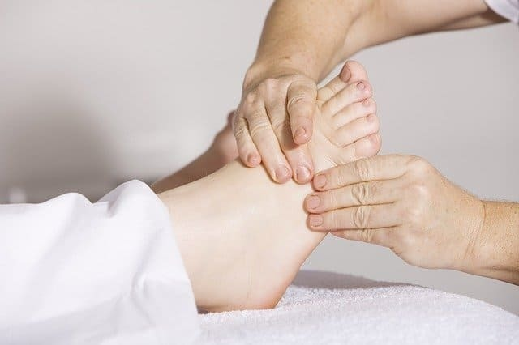

水・電解質代謝異常の鍼灸
体内の水分やナトリウム・カリウム等のバランスが崩れる状態です。専門医での検査と治療を最優先に、安定期の体調管理を支援します。
まず知っておきたい要点と改善の流れ
体内の水分とナトリウム・カリウム・カルシウム・マグネシウムなどの電解質は、食事からの摂取と腎臓による排泄で精密に保たれています。急性・慢性腎不全などの腎疾患、アルドステロンや抗利尿ホルモンの分泌異常、利尿薬などの薬剤、大量の発汗・下痢・嘔吐、極端な水分や塩分の過不足などによりバランスが崩れると、神経・筋肉・心臓の働きに多様な異常が生じます。（公式解説）
このようなお悩みはありませんか？
- ✓強い口の渇きやふらつき、血圧低下がある
- ✓体のむくみや急な体重増加、息苦しさを感じる
- ✓手足のつりや脱力感、しびれが出やすい
- ✓吐き気や頭痛、意識のぼんやり感がある
当院の施術アプローチ・改善の流れ
なぜ鍼灸で改善へ向かうのか？（作用機序の図解）
水・電解質代謝異常に対する鍼灸は、心拍変動・血管トーンを整える自律神経サポート機序を通じて、お体本来の回復力を引き出します。

循環器専門医の標準治療を絶対前提とし、手首や背部の安全な経穴へ低刺激でアプローチします。
心臓への過剰な交感神経刺激を穏やかに鎮め、心拍リズムと血管緊張の急変を抑えます。
ストレスで固まりやすい胸郭や横隔膜の緊張を解き、酸素摂取とリラックス反応を促します。
内服管理を厳守しながら、疲労やストレスが引き金となる症状不安の軽減を支えます。
院長YouTube解説・関連動画
水・電解質代謝異常では、色々な症状が現れる
水・電解質代謝異常では、色々な症状が現れます。
水分が欠乏している状態になると、口の渇きや血圧の低下、ふらつきなどの症状が起こります。水分が過剰な状態になると、体のむくみや体重の増加、息苦しさや血圧の上昇などの症状が現れます。
血液の電解質の代謝異常によって現れる症状は、異常が起こる電解質の種類によって意識障害や口の渇き、手足のつりや脱力、徐脈や血圧の低下、悪心や嘔吐など非常に色々あります。
水・電解質代謝異常は非常に広範なテーマであり、その症状も多岐にわたります。症状は体内の特定の電解質（ナトリウム、カリウム、カルシウム、マグネシウムなど）が過剰または不足しているか、または水分バランスが崩れているかに依存します。以下に、主な電解質異常とそれに伴う症状について解説します。
・ナトリウム異常
低ナトリウム血症（Hyponatremia）
症状: 頭痛、吐き気、嘔吐、筋肉の痙攣や弱さ、混乱、意識レベルの低下、重度の場合には昏睡状態やけいれん。
原因: 糖尿病性インシピダス、心不全、肝硬変、特定の薬物（例：利尿薬、抗精神病薬）、過度の水分摂取など。
・高ナトリウム血症（Hypernatremia）
症状: 焦燥感、興奮、不安、頭痛、嘔吐、高血圧、重度の場合には昏睡状態やけいれん。
原因: 高温環境での過度な汗の喪失、糖尿病、腎障害、不適切な利尿薬の使用など。
・カリウム異常
低カリウム血症（Hypokalemia）
症状: 筋肉の弱さ、痙攣、心拍数の異常（心室細動など）、便秘、疲労感。
原因: 利尿薬の過度な使用、嘔吐、下痢、アルドステロンの過剰産生など。
高カリウム血症（Hyperkalemia）
症状: 疲労感、筋肉の弱さ、心拍数の異常（心停止のリスク）、しびれ。
原因: 腎不全、糖尿病、薬物（ACE阻害薬、ARBなど）、大量のカリウム摂取など。
・カルシウム異常
低カルシウム血症（Hypocalcemia）
症状: 手足のしびれ、筋肉の痙攣、心拍数の異常、精神症状（うつ、不安、混乱）。
原因: 副甲状腺機能低下症、腎不全、ビタミンD不足、マグネシウム不足など。
高カルシウム血症（Hypercalcemia）
症状: 疲労、筋肉の弱さ、便秘、多飲多尿、吐き気、嘔吐、心拍数の異常。
原因: 一次性副甲状腺機能亢進症、がん（特に乳がん、肺がん）、長期のビタミンD摂取過多など。
・酸塩基バランスの異常
アシドーシス（Acidosis）
症状: 呼吸困難、頭痛、筋肉の弱さ、疲労、昏睡状態。
原因: 糖尿病、腎不全、肺の病気。
アルカローシス（Alkalosis）
症状: 手足の痙攣、手の震え、不正確な感覚、意識レベルの低下。
原因: 長時間の嘔吐、過呼吸、腎障害。
このように、水・電解質代謝異常の症状は、どの電解質が影響を受けているかによって大きく異なります。
水・電解資質代謝異常の改善方法は、薬や食事の指導などです。
腎臓の働きが正常で、腎臓での水・電解質代謝を調整するホルモンの量や作用も正常な場合は、水の摂取量や食事の摂取量が腎臓で調整することができる範囲を超えて、過剰であったり不足していたりすることが原因であると考えられます。
そのため、飲んだり食べたりしている量が不足している場合は、点滴や内服薬などで補給をすることで改善が期待できます。
腎臓の病気などで、腎臓で尿を作る機能が下がっている場合は、尿の量や成分を調整するホルモンが過剰になったり不足したり、作用に異常があることが原因となっていると考えられます。
そのため、水・電解資質代謝異常を改善するためには、病気を改善することが大事です。飲む水の量や食事内容の指導を行ったり、薬などを使って改善に取り組むこともあります。
水・電解質代謝異常は非常に広範な病気であり、その改善法は症状や原因によって大きく異なる可能性があります。以下に、水・電解質代謝異常に対する一般的な改善法をいくつか詳しく紹介します。
水・電解質代謝異常の改善の第一歩は、正確な判断です。一般的には、血液や尿を調べることでナトリウム、カリウム、マグネシウム、カルシウム、塩素、炭酸ガスなどのレベルを調査します。これにより、どの電解質が異常を示しているのか、または体液の酸塩基バランスが崩れているのかを確認できます。
・ナトリウムの異常
低ナトリウム血症（Hyponatremia）
改善方法: 軽度な場合は飲水制限や塩分補給。重度の場合は急速な補液や薬物治療（例：バソプレシン受容体拮抗薬）が必要。
・高ナトリウム血症（Hypernatremia）
改善方法: 補水が主な改善法。必要に応じて、低ナトリウムの補液やダイウレーゼ（利尿薬）。
・カリウムの異常
低カリウム血症（Hypokalemia）
改善方法: カリウム補給が基本。口からの摂取または静脈注射で行われる。
・高カリウム血症（Hyperkalemia）
改善方法: 短期的にはカルシウム静脈注射、長期的にはダイアライゼーや利尿薬。
・カルシウムの異常
低カルシウム血症（Hypocalcemia）
改善方法: カルシウムとビタミンDの補給。
高カルシウム血症（Hypercalcemia）
改善方法: 脱水症状の解消、利尿薬の使用、ビスホスフォネート。
・マグネシウムの異常
低マグネシウム血症（Hypomagnesemia）
改善方法: マグネシウムサプリメントや食事。
高マグネシウム血症（Hypermagnesemia）
改善方法: マグネシウム摂取の制限、薬、場合によっては透析。
・酸塩基バランスの異常
アシドーシス（Acidosis）
改善方法: ビカーボネート補給や通気機能の改善。
アルカローシス（Alkalosis）
改善方法: 原因に応じて補液や薬。
・その他の改善方法
脱水症状または過剰水分摂取に対する補液、利尿薬による尿量調整、電解質補給食品やサプリメントなど。
水・電解質代謝異常の改善方法は多岐にわたり、専門的なケアが必要な場合も多いです。そのため、症状が出た場合は、必ず専門の機関で判断と改善を受けることが最も重要です。
水・電解質代謝異常の改善は非常に複雑であり、対象者やその症状によって使用される薬剤は異なる場合があります。以下は一般的な改善で使用される薬の種類や対象者、副作用、効果、目的について説明します。
・ナトリウムの異常
バソプレシン受容体拮抗薬（例：トルバプタン）
対象者: 低ナトリウム血症の場合。
効果: ナトリウムレベルを増加させる。
目的: 低ナトリウム血症の改善。
副作用: 口渇、尿量の増加、低血圧、肝機能障害。
・カリウムの異常
カリウムクレニン（例：Slow-K）
対象者: 低カリウム血症の場合。
効果: カリウムレベルを増加させる。
目的: 低カリウム血症の改善。
副作用: 腹痛、下痢、心不整脈。
カリウム結合樹脂（例：ソーダムポリスチレンスルホネート）
対象者: 高カリウム血症の場合。
効果: カリウムレベルを低減させる。
目的: 高カリウム血症の改善。
副作用: 腹痛、便秘、低カリウム血症。
・カルシウムの異常
ビタミンD補給（例：カルシトリオール）
対象者: 低カルシウム血症の場合。
効果: カルシウムの吸収を促進する。
目的: 低カルシウム血症の改善。
副作用: 高カルシウム血症、尿路結石。
ビスホスフォネート（例：アレンドロン酸）
対象者: 高カルシウム血症の場合。
効果: カルシウムレベルを低減させる。
目的: 高カルシウム血症の改善。
副作用: 骨痛、腎機能障害、低カルシウム血症。
・マグネシウムの異常
マグネシウムサプリメント（例：マグネシウム硫酸塩）
対象者: 低マグネシウム血症の場合。
効果: マグネシウムレベルを増加させる。
目的: 低マグネシウム血症の改善。
副作用: 下痢、吐き気、高マグネシウム血症。
・酸塩基バランスの異常
ナトリウムビカーボネート
対象者: 酸性血症の場合。
効果: 血液のpHレベルを正常化。
目的: アシドーシスの改善。
副作用: アルカローシス、高ナトリウム血症。
以上の薬剤は一例であり、個々の状態や他の健康問題によっては異なる薬剤が使用されることもあります。そのため、水・電解質代謝異常の疑いがある場合は、必ず専門家に相談することが大事です。
慢性腎臓病などの病気を発症しており、腎臓の機能が低下している人は、そうでない人と比べると水・電解質異常が起こりやすい状態であるということができます。
水・電解質異常を防ぐためには、医師から水分制限や塩分制限やカリウム制限などの指導を受けている場合守ることが大事です。処方された薬をきちんと飲むことも大事です。
腎臓の機能に異常がない人でも、運動中や高温の場所での作業中や発熱している時など、大量に汗をかくときは脱水にならないように注意することが大事です。

循環器のお悩みのツボ図解とセルフケア
実際の施術ではお一人おひとりの体質・症状に合わせて選穴しますが、循環器領域の補完ケア（高血圧・安定狭心症・心拍変動調整）の臨床でよく用いられる代表的なツボの目安です。

📌 代表的なツボの詳細一覧表を開く（6穴） ▼
| ツボ名 | 位置の目安 | 主な狙い | セルフケアの注意点 |
|---|---|---|---|
| 内関（ないかん） | 手首内側横ジワから肘側へ指3本分、2腱の間 | 動悸・胸部圧迫感の緩和、自律神経調整 | 吐く息に合わせて5秒ほど優しく圧迫 |
| 膻中（だんちゅう） | 左右の乳頭を結ぶ線の中央（胸骨上） | 胸のつかえ・呼吸の浅さ・ストレス性緊張緩和 | 骨直上のため強く押さず温める・軽くさする |
| 神門（しんもん） | 手首内側横ジワの小指側くぼみ | 交感神経の過緊張鎮静、不安感・動悸ケア | 尺骨神経近接のため爪を立てずソフトに |
| 曲池（きょくち） | 肘を曲げた外側のシワ先端 | 血圧変動・上半身ののぼせ・末梢循環サポート | 痛みの出ない心地よい強さで左右交互に |
| 足三里（あしさんり） | 膝外側下のくぼみから指4本分下 | 全身血流・自律神経バランス・疲労回復 | 食直後や入浴直後の強い刺激は避ける |
| 太衝（たいしょう） | 足の甲、親指と人差し指の骨が交わる手前 | ストレス性の血圧上昇・末梢の巡り調整 | 足背動脈拍動部付近のため強く揉みすぎない |
国際査読論文の科学的エビデンス
国際的な医学データベース（PubMed・Cochrane等）で報告されている循環器領域の補完ケア（高血圧・安定狭心症・心拍変動調整）領域の代表的な査読済み鍼灸研究をまとめています（標準治療との併用や研究上の限界を含めて正確に掲載）。
📚 査読論文データ・PubMed出典リンクを開く（4件） ▼
| 年・研究デザイン | 対象・規模 | 主な結果 | 限界・出典 |
|---|---|---|---|
| 2019年 大規模多施設RCT | 慢性安定狭心症 398名解析（標準薬物療法併用） | 16週時点の4週間発作減少は実鍼群がシャム群比5.18回・待機群比5.63回多く有意改善（P<0.001）。 | 標準薬物療法への併用（補完）試験であり単独療法ではない。 JAMA Intern Med (PMID: 31355870) |
| 2007年 シャム対照RCT | 本態性高血圧 140名完了（ドイツ・24時間ABPM） | 治療終了時の24時間血圧はシャム比SBP -6.4mmHg・DBP -3.7mmHg有意低下（P<0.001）。 | 終了3〜6か月で治療前水準へ戻るため継続ケアが必要。 Circulation (PMID: 17548730) |
| 2015年 メタ解析 | 高血圧 23 RCTs（n=1,788） | 降圧薬＋実鍼は降圧薬＋シャム比でSBP -7.47mmHg・DBP -4.22mmHg有意低下。鍼単独は降圧薬と同等・根拠不十分。 | 盲検化・異質性に課題。降圧薬の自己中断は厳禁。 PLoS One (PMID: 26207806) |
| 2025年 メタ解析 | 心拍変動（HRV）10 RCTs（n=744） | 自律神経全体の適応指標SDNNを有意に改善、重篤な有害事象なし。 | LF・HFには不確実性が高くさらなる検証が必要。 Front Neurosci (PMID: 41230507) |
参考文献・出典
- 銀座そうぜん鍼灸院「水・電解質代謝異常の公式解説ページ」
- 2019年 大規模多施設RCT（慢性安定狭心症 398名解析（標準薬物療法併用））— JAMA Intern Med (PMID: 31355870)
- 2007年 シャム対照RCT（本態性高血圧 140名完了（ドイツ・24時間ABPM））— Circulation (PMID: 17548730)
- 2015年 メタ解析（高血圧 23 RCTs（n=1,788））— PLoS One (PMID: 26207806)
- 2025年 メタ解析（心拍変動（HRV）10 RCTs（n=744））— Front Neurosci (PMID: 41230507)
よくある質問（FAQ）
Q. 手足のつりやむくみが強いとき、すぐ鍼灸を受けてもよいですか？▼
Q. 日常生活で気をつけることはありますか？▼
あわせて読まれる関連疾患（循環器のお悩み）
水分の過剰摂取で血液のナトリウム濃度が急低下する危険な状態です。急性期は救急対応が最優先で、安定期のストレス管理を支援します。
大動脈弁の閉じが悪くなり左心室へ血液が逆流する弁膜症です。循環器内科の標準治療を最優先に、安定期のコンディションを支えます。
心臓の筋肉が硬くなり十分に広がれなくなる希少な心筋症です。専門医での心不全・不整脈管理を最優先に安定期の体調を支えます。
首の骨の中を通る椎骨動脈の内膜が裂ける重篤な血管疾患です。突然の頭痛は即救急受診が必須で、首への施術や操作は絶対禁忌です。
夜間や安静時に心室細動を起こし得る遺伝性不整脈疾患です。循環器専門医での厳重な管理を最優先に、安定期のストレス管理を支援します。
おへそが飛び出し腸管などが脱出する状態です。激しい痛みや戻らない膨らみは緊急受診が必須、安定期の腹圧対策等を補完支援します。
おひとりで悩まず、まずはご相談ください
銀座本院・川口・大宮・横浜・博多・田無の各院でご予約を承っております。